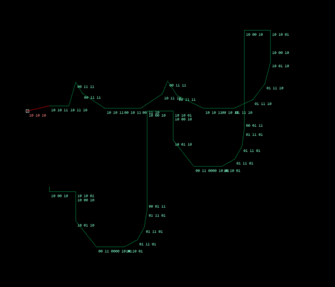
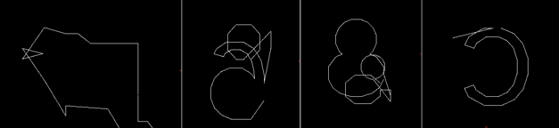

Text Rendering
Hello hello!
It's been a while; I got totally sidetracked into Text Rendering. That is, getting text that looks good to show up in my game. Mainly for UI.
So far, I have been using a monospace sprite-font I created a year ago. It has served me well! But especially in VR, where text is low-res and may be arbitrarily rotated, sheared and warped, it seriously impacts readability.
Because of this problem, it becomes worth it to pull out all the stops, employ all tricks and make sure it's crisp.
I'll start by showing the before and after.
Left is new, Right is old.
Making sure it's crisp.
Following is a detailed-ish walkthrough of the steps I took one after another to achieve these results without using any engine, libraries or frameworks.
For rendering the font ingame, I considered three methods:
- Load the font, turn it into geometry and draw it like normal geometry with MSAA.
- Upload the curves to the GPU directly and draw them with a big shader.
- Rasterize the font to a Distance Field offline then render it as a texture.
I chose option 3, mainly because I've seen it before in other games and it provides "good enough" results at very low cost.
So what even are distance fields? What problem do they solve?
The easy explanation is Anti-Aliasing. If we draw a font directly, we get these ugly jaggies on angled lines and curves.
 |
 |
|---|---|
| Without Anti Aliasing | With Anti Aliasing |
Traditional font renderers (as far as I understand) solve this problem by rendering the font once with really good AA at a couple pre-set resolutions. Then it simply picks from those pre-rendered images. If we were only dealing with 2D text, this would be perfect. But if we need 3D text, like in VR, we would need to project the font from 3D in the world to 2D on the screen, then re-rasterize it every frame to get perfect Anti-Aliasing. That would be very expensive. The solution? Generate a Distance Field Texture that lets us dynamically choose the amount of AA to apply. A distance field texture looks like this:
 |
|---|
| Distance Field Texture |
If the text is small on the screen, the jaggies get bigger. When the jaggies are bigger, we need to "blur" the edges more to make it appear smooth. With a Distance Field Texture, this "blur" amount can be changed on the fly simply by increasing the contrast of the image.
| Low contrast, way too blurry | Medium Contrast still too blurry | High Contrast, looks good |
| Low contrast, too blurry even at low resolution | Medium Contrast perfect | High Contrast, too sharp |
Using the built-in ddx/ddy shader-functions, a 'perfect' contrast value can be aquired that will make sure the blend region is always exactly one pixel wide, no matter the angle or zoom. This article by Ben Golus goes into more detail if you want to implement this yourself.
This is how Distance Field Textures solve the Aliasing problem at any resolution or angle.
Pulling out all the stops.
TrueType (.ttf)
When I said no libraries, I meant no libraries.
One of the first steps was getting a handle on TrueType, the primary file format for digital print and digital screens, used mostly unchanged since the 80s.
Ttf is structured internally as a series of tables, each with a name and mostly googlable structure. Here are some fantastic resources:
Official microsoft documentation
"Implementing a Font Reader and Rasterizer from Scratch, Part 1: TTF Font Reader."
The first part of reading the file that really gave me a lot of trouble was the glyf table, which contains the actual curve data that describes the shape of the glyphs themselve.
|   |
|---|
| Some examples of me failing to read the data corectly x'D |
The packing format here is very clever, clearly designed for an era without gigabytes of RAM available. I eventually got all the points and their associated metadata extracted correctly.
 |
|---|
| The '@' glyph is constructed from two contours (a closed loop sequence of Line Segments, shown here as green and purple). |
Conceptually, a glyph is constructed out of two kinds of objects, Line Segments and Curve Segments. Line Segments have a Start Point and an End Point. Curve Segments have a Start Point, Tangent Point and End point. Forming a Quadratic Bezier Curve
The ttf format however, stores Line Segments as series of offsets, "move this far up and this far right". This way, a Line Segment is described with a single point instead of two. Curves are similarly compressed: when an offset is tagged as a curve, instead of representing the Start, Tangent and End points it represents just the Tangent Point. The Start and End points of the Curve Segment are only implied, and are to be automatically placed 50/50 between the previous Tangent Point and the current Tangent Point.
 |
|---|
| Notice how the Endpoints (marked End) always lie exactly between the Tangent points (marked Tan). These red points are not stored in the file. |
 |
|---|
| Here is the complete glyph, with all the real and implied points drawn. |
Huzzah, I got the data I wanted. Now for the hard part.
Employing all the tricks.
After extracting the curves, we need to actually draw them to the screen, filled in.
Glyph rasterization
Rasterisation is done line by line, pixel-by-pixel. We first need to find out whether the pixel is inside of the glyph or not. I did this with a "point-in-polygon" algorithm called "Winding number algorithm" that I found on Wikipedia. Imagine drawing a line horizontally out from the pixel. Every time the line crosses a segment of the glyph we find whether the intersected segment is going "up" or "down". Up means -1, Down means +1. If the sum of these values is one or above, the point is inside the glyph. If the sum is zero or negative, the point is outside. Check out the wikipedia article for a more detailed description.
 |
 |
|---|---|
| The total sum of the intersections here is 0 (0 - 1 + 1 - 1 + 1), meaning the point is outside of the glyph. | The sum of the intersections is 1 (1 - 1 + 1 - 1 + 1), meaning the point is inside of the glyph. |
To do this horizontal-line intersection we need two intersection functions:
- ray-line intersection for Line Segments
- ray-bezier intersection for Curve Segments
The intersection between h (the height of the horizontal line) and the Segment can be found by formulating them like this:
- ray-line:
lerp(a, b, t) = h - ray-bezier:
lerp(lerp(a, c, t), lerp(c, b, t), t) = h
where:
ais the Start Point
bis the End Point
cis the Tangent Point
tis a 0-1 distance along the Segment
andlerp(a, b, t)isa * (1 - t) + b * t
And then solving fort.
I used Wolfram Alpha for this because I'm lazy.
This gives me what t value along the Segment represents intersections with h. One caveat is that a bezier curve sometimes has two intersections (because parabola).
You can play with it here: https://www.desmos.com/calculator/3pmijwu3an
Finding whether the Segment is "going up" or "going down" is done by simply checking if the start point is above the end point or not. The same holds for the bezier curve, if it intersects twice, the second intersection is always going the other direction (because parabola).

Wowee, Glyph rasterized!
but.. uh oh. If you look closely, you can see that it's very pixely, no Anti Aliasing in sight!
Applying the distance field.
The last part needed is to turn this shape into a distance field.
For this we need two distance functions: Distance To Line Segment and Distance To Bezier Segment. Distance to Line Segment is easy enough, this video by Inigo Quilez explains it very nicely https://www.youtube.com/watch?v=PMltMdi1Wzg Distance To Bezier Segment however is much harder, apparently you need to either solve a Quintic Equation or use some numerical approach like Newton's method. If anyone good at math is reading this, I would absolutely love to learn how to do either of these! For now though I gave up, and used another solution by Inigo Quilez, linked here: https://iquilezles.org/articles/distfunctions2d/
Evaluating these functions for every pixel gives us this result:

It looks.. almost correct? But the value shown is the distance to the edges of the glyph rather than the distance to the glyph itself. To resolve this, we can use the flat rasterized glyph from the previous chapter to invert the inside, making it go from grey to white instead of grey to black.

Blmmo. Distance field done!
Here's the completed spritesheet, rendered using the font Atkinson Hyperlegible